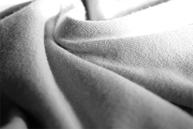
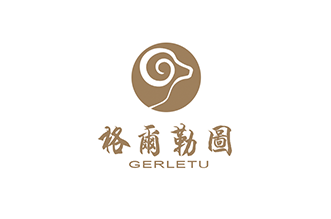

- 


- 


SCALE
nner Mongolia Gerletu Cashmere Co., Ltd, located in Hohhot, which is the most development cashmere industrial city of China. Our factory covers an area of 3,500 square meters, with 48(sets)of large equipments, and having 150 skilled workers, is a large international cashmere production enterprise. We do cashmere OEM business for many well-known international brads. Although in current difficult economic environments, our overseas orders have been increasing, this shows our high quality and best service.Relying on the success in overseas market, we developed our own brand “GERLETU” into an affordable brand by common people in domestic.
We sincerely appreciate our clients trust and support, we are also grateful to our staff for their hard working. With their efforts, we will make a brighter future.